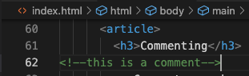

Commenting
Comments can be placed in code to to set reminders, explanations, and note things to collaborators. Comments are not displayed by the browser and can only be seen when reading or editing the code of a site.
Hello and welcome to my reference website from web design 1! This site is a summary of all that was learned in the course. The content covers the fundamentals of HTML as well as some basics of CSS.
Commit messages are a marker for what the commit will do. They should be kept brief but at least three words long and starting with an active verb. Think of the sentance as starting with "this commit will"
and then begin the mssage.
HTML or HyperText Markup Language is a coding language used to describe content of a website. Despite adding a difference in appearance to the content the role of HTML tags is to give content meaning and hierarchy, and should not be used to style visuals.
Comments can be placed in code to to set reminders, explanations, and note things to collaborators. Comments are not displayed by the browser and can only be seen when reading or editing the code of a site.
Headings span from 1 to 6, h1 holding the most important information, and h6 holding the least.
A p tag defines a paragraph of text. Paragraphs are block-level elements and will be displayed in one long line by default as well as standard margins.
There may be times when you just need a generic element to target content; most often to later manipulate styling with CSS or behavior with JS.
Common global attributes allow us to target any HTML element within our CSS or JavaScript.
Web content must be:
ARIA has a set of landmark roles to help those using screen readers to jump directly to specific sections within our sites.
Adding aria-label attribute provides the user with a non-visual label that will only be announced by screen readers.
Always describe your images with the alt attribute. If purely decorative you can leave it empty and apply role=“presentation”
The alt attribute has two purposes:
Skip links are placed at the top of your page and offer users a way to jump to specific areas of the page.
Like comments in HTML, CSS comments are not seen in the browser and can only be found in the code. They are used to make notes add context and directions.
Links can change styles depending on the state of use.
How to link a Google Font:
Outside the box is the margin, a transparent layer pushing other boxes away. Margin is the space around an element that separates it from other elements.
The margin is an invisible space around your box. It adds spacing outside of the box, pushing other boxes away from the box. Margins can have positive or negative values.
Padding adds spacing inside the box, pushing the content away from the border. The background color is visible with the padding.